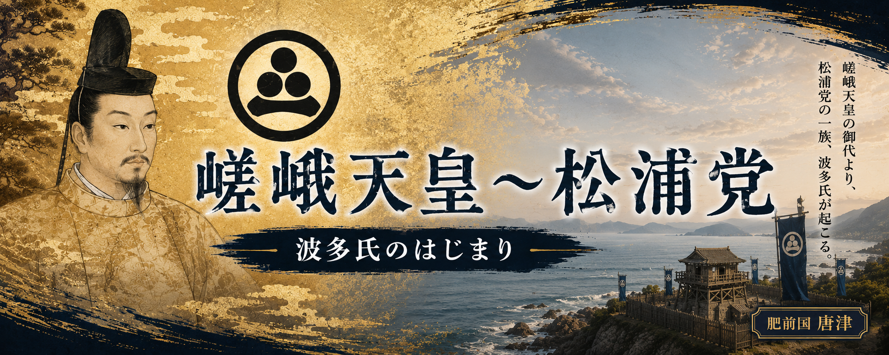

すべての始まりは、平安時代の嵯峨天皇の時代までさかのぼります。
その流れは「嵯峨源氏」として広がり、やがて渡辺綱のような武将たちへとつながっていきました。
その後、九州の地では海を舞台に活躍する武士団「上松浦党」が生まれ、
その力はやがて岸岳を拠点とする波多氏へと受け継がれていきます。
平安から戦国へ長い時代を越えて続いた一族の物語が、ここから始まります。
平安時代の初め、都では天皇を中心とした政治が続いていました。
その中で大きな時代を築いたのが、嵯峨天皇（786〜842年）です。
嵯峨天皇の時代、皇族の一部は新たな姓を与えられ、 皇族から臣下へと立場を変えていきました。
その中で生まれた一つが、嵯峨天皇の血を受け継ぐ 「嵯峨源氏」と呼ばれる一族です。
嵯峨源氏の流れは時代とともに広がり、 やがて武士として力を持つ一族へと成長していきます。
その後、この血筋からは渡辺綱のような武士も現れ、 平安時代の武士の歴史へとつながっていきました。
岸岳城と波多氏の歴史をたどる旅は、 まずこの平安時代の源流から始まります。
・『魏志倭人伝』（『三国志』魏書・東夷伝・倭人条） 伊都国・一大卒・戸数など、本文で触れた記述の一次史料
・伊都国歴史博物館（展示解説） 平原一号墓の復元展示、三雲南小路遺跡と副葬品に関する説明（現地確認：2025年11月4日）
・糸島市教育委員会（現地案内板・資料） 遺跡公園内の案内板や配布資料の記述を参照（現地確認：2025年11月4日）
・原田大六『実在した神話』 邪馬台国・伊都国をめぐる論点の理解のために参照した参考文献
・安本美典『卑弥呼の墓は、すでに発掘されている!!』 卑弥呼・王墓をめぐる諸説の一つとして参照した参考文献
・柳田康雄「弥生時代中・後期の『文字』の使用について」 弥生期の文字資料・表記に関する背景理解のために参照
※本文中の「仮説」「〜かもしれない」は、史料にない部分についての私見です。
平安時代中頃になると、嵯峨源氏の流れをくむ一族は各地へ広がり
その中から武士として力を持つ者たちが現れていきました。その流れの中に登場するのが、
渡辺綱（953〜1025年）です。
系図では嵯峨天皇につながる血筋を持つ人物として伝えられ、
嵯峨源氏の流れをくむ武士とされています。
渡辺綱は源頼光に仕えた「頼光四天王」の一人として知られ、 一条戻り橋の鬼退治など、数々の伝説を残しました。
その後、渡辺氏は摂津を中心に広がり、 海や水運とも関わる武士団へと成長していきます。
この武士の流れが、やがて西へ広がり、 九州北部の歴史へとつながっていくことになります。
・『尊卑分脈』
平安〜鎌倉時代の公家・武士の系譜資料。
・『今昔物語集』
源頼光や渡辺綱に関する説話を収録した平安時代の資料。
・渡辺氏系図
渡辺氏の系譜を伝える資料。
※渡辺綱の鬼退治などは後世の伝承を含みます。 系譜についても後世に整理された資料を参考にしています。
平安時代中頃、九州北部の海で大きな事件が起こりました。
１０１９年、刀伊（とい）と呼ばれる集団が対馬・壱岐を襲い、
さらに九州北部へ侵入しました。
この危機に立ち向かったのが、大宰権帥（だざいのごんのそち）として 九州に赴任していた藤原隆家です。
隆家は九州の武士たちをまとめ、 刀伊の侵攻を退ける指揮を執りました。
この戦いでは、朝廷だけではなく、 現地の武士たちの力が大きな役割を果たしました。
海からの脅威を経験した九州北部では、 土地を守り、海と関わる武士たちの存在が さらに重要になっていきます。
この時代に生まれた海の武士の流れは、 やがて松浦地方の歴史へとつながっていきます。
・『小右記』
藤原実資の日記。
１０１９年の刀伊の入寇について詳しく記録されています。
・『日本紀略』
平安時代の歴史書。
刀伊の入寇に関する記録があります。
・『扶桑略記』
平安時代の出来事をまとめた歴史書です。
平安時代の中頃、九州北部では武士の力が少しずつ広がり、 各地で土地を守る者たちの存在が重要になっていきました。
その頃、岸岳（きしだけ）には「鬼子嶽（きしだけ）」とも呼ばれる 山の伝説が残されています。
標高約３２０メートルの岸岳を根城に、
狐角（こかく）という人物を頭領とする賊徒の一味が住みつき、
周辺の里を荒らして人々を苦しめていたと伝えられています。
その姿は人々から「鬼」と恐れられ、 山には恐ろしい鬼が棲むという話として語り継がれるようになりました。
この鬼退治に向かった人物として伝えられるのが、 筒井判官久（つついほうがんひさし）という武士です。
久は嵯峨源氏の流れをくむ武人で、
父は大江山の鬼退治で知られる渡辺綱と伝えられています。
渡辺綱は源頼光に仕えた「頼光四天王」の一人として、
後世まで鬼退治の英雄として語られました。
朝廷は乱れた肥前の地を鎮めるため久を派遣し、
岸岳に立てこもる狐角一味と戦い、
これを討ち取ったと伝承されています。
ただし、この出来事は現在確認できる史料上の戦ではなく、
岸岳に残る民間伝承のひとつです。
しかし、恐ろしい「鬼」を武士が退治する物語は、
平安時代の武士の登場と、
この地域に残る歴史の記憶を伝える物語として
今も語り継がれています。
・『日本の伝説38 佐賀の伝説』（角川書店）p.77
岸岳（鬼子嶽）に伝わる狐角（木角）と鬼退治伝説。
・『岸岳城跡・北波多地域の郷土資料』
岸岳周辺に伝わる伝説や地域の歴史資料。
・『平家物語 剣巻』
渡辺綱の鬼退治伝説を伝える説話資料。
※岸岳の鬼退治は、史実として確認される合戦ではなく、
地域に伝わる伝承として受け継がれています。
平安時代後期、肥前松浦地方では、 新たな武士の勢力が広がり始めました。
その中心となった人物が、源久（松浦久）です。
伝えられる系譜では、源久は嵯峨源氏の流れをくみ、 渡辺綱につながる武士の一族とされています。
史料上では、１０６９年頃、 源久は肥前国松浦郡の宇野御厨検校として この地へ下向したとされています。
宇野御厨は、皇室や神社へ海産物などを納める地域で、 松浦地方は古くから海と深く関わる土地でした。
源久は現在の松浦市今福周辺を拠点とし、 梶谷城を築いたと伝えられています。
梶谷城は海を望む山城で、
周囲の海や土地を見渡すことのできる位置にあり、
松浦地方で勢力を築くための重要な拠点となりました。
その後、源久の一族は松浦地方の各地へ広がり、 それぞれの土地を治める武士として成長していきます。
こうした一族や地域の武士たちの結びつきが、 やがて「松浦党」と呼ばれる武士団へ発展していきました。
・『松浦家の歴史』
源久、松浦氏の成立、宇野御厨について。
・『松浦史料博物館 松浦党資料』
松浦党成立と一族の広がりについて。
・『岸岳城跡・北波多地域郷土資料』
松浦地方の武士団と地域の歴史資料。
※源久の系譜については伝承を含む部分があります。
松浦党の成立は、平安後期の松浦地方における武士団形成として伝えられています。